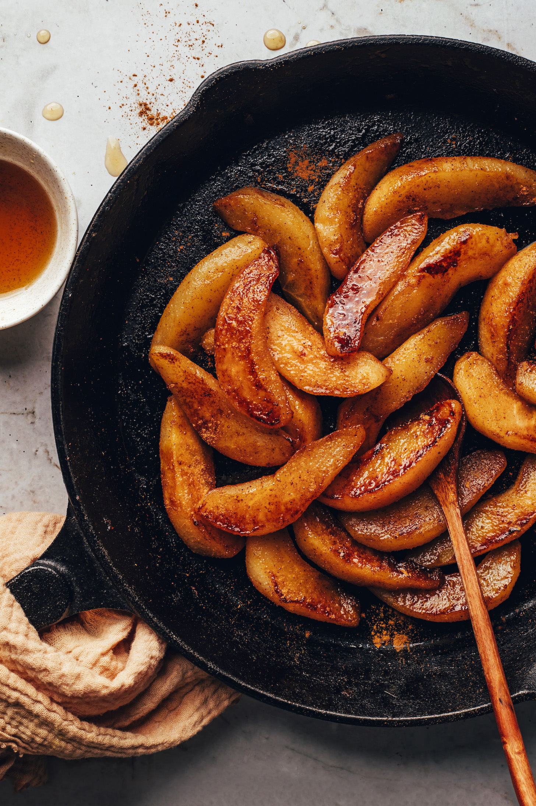

Caramelized Cinnamon-Spiced Pears

Description
This recipe for caramelized cinnamon-spiced pears is warm and a quick, easy addition to many meals. Add these delicious pears to pancakes or waffles, oatmeal, yogurt or ice cream.
Full credit to Minimalist Baker for the recipe! Visit the original recipe and more here.
Ingredients
- 1 large ripe pear - peeled or unpeeled
- 1 tsp butter
- 2 tsp maple syrup or brown sugar
- 1/8 tsp ground cinnamon
- 2 tsp lemon juice
Recipe
- Quarter pears and optionally peel them (we prefer to leave the skin on for ease and nutrition, but the texture is slightly more enjoyable peeled). Carefully remove and discard the cores and stems. Then cut each quarter in half or thirds to create ~1/2-inch wedges (see photo).
- Heat a large rimmed skillet over medium heat. Add oil or (vegan) butter and swirl to coat.
- Add pears in a single layer, being careful not to crowd the pan. Cover with a lid. Cook for ~2 minutes, or until the pears are beginning to brown. Slightly reduce heat if browning too quickly.
- Remove lid, add brown sugar or maple syrup and cinnamon, and use a spatula to flip / gently toss the pears to begin caramelizing on the other side. Cook uncovered for ~1-2 minutes more, allowing them to sit undisturbed for short periods to achieve proper caramelization — just be careful not to burn. Pears should be tender and slightly caramelized on the edges.
- Add the lemon juice to deglaze the pan and balance the flavors, stir, and remove from heat.
- Serve warm with yogurt, oatmeal, porridge, waffles, pancakes, or ice cream! Leftover pears will keep in the refrigerator for up to 3 days but are best when fresh.